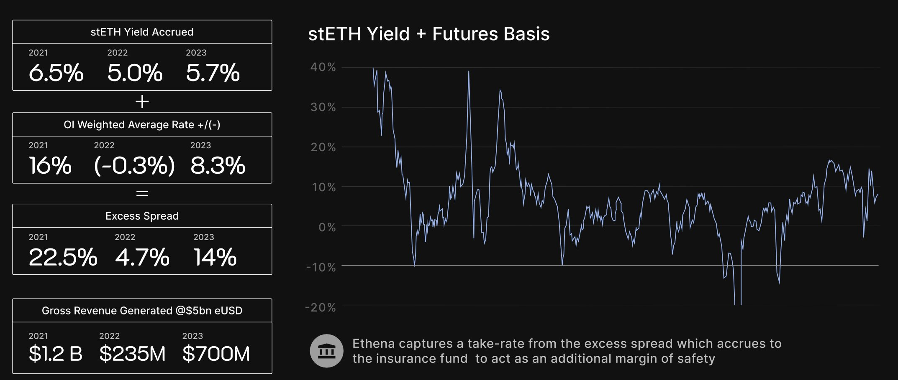
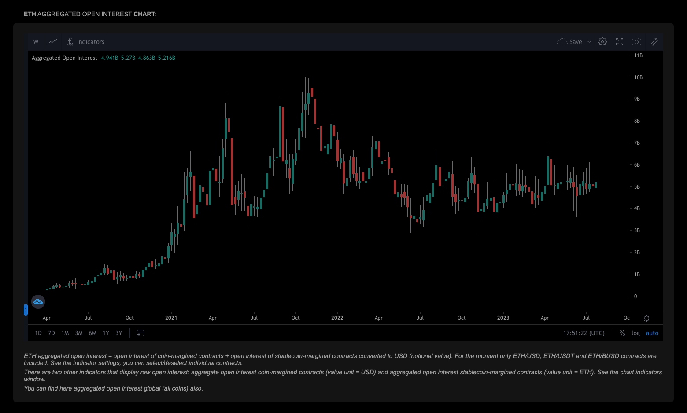
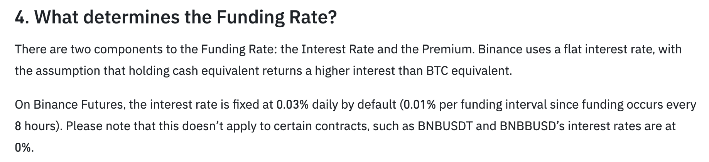

Ethena Labs
Tweet Thread
Some thoughts on @ethena_labs and the attempt towards a stablecoin, $USDe, independent of the traditional banking system. https://mirror.xyz/0xF99d0E4E3435cc9C9868D1C6274DfaB3e2721341/2gfr0qaFvZ8UxPaBvPPAZgwdcbssR_cyg5svqj1YGrY
Quick Overview of the Basic Mechanism
1 $USDe is backed by a $1 delta neutral ETH position. - Long $1 of stETH spot - Short $1 of ETH perpetual futures swap contracts (on a centralized exchange, with the spot stETH as cross-collateral).
For a more substantial overview, check out @cryptohayes (Ethena advisor) “Dust on Crust” https://blog.bitmex.com/dust-on-crust/
- A note the scale of this endeavor (relevant later).
Ethena is pursuing a trillion dollar TAM.
- Stablecoin circulating supply sits comfortably above $100 billion (throughout the bear market).
- Tether printed over $1 billion in profit last quarter.
- The CBDCs are coming, from China to the WEF (both of which want censorship permissions).
“If you don’t believe me or don’t get it, I don’t have time to try to convince you, sorry.” INSERT VIDEO
On the surface, there’s two obvious/primary risks to the mechanism.
- Counterparty (exchange) Risk
- Basis (funding rate) Risk
How, and to what extent, is Ethena mitigating these?
- Addressing Counterparty Risk
Whether its an external hack (Mt Gox) or insider theft (FTX) - CEX risk is certainly non-negligible. What’s the risk-adjusted rate at which you would park 8+ figures on Binance, or Deribit? This is a serious question that crypto firms (HFT shops, VC firms) decide internally…
In other words, if Binance were a public company, where would their credit default swaps trade?
Counter to what @cryptohayes initially described in his early writings, Ethena must avoid custodying the assets at the exchanges. Instead, park the assets with a secure third party (Fireblocks, Ledger, Copper), form agreements with the exchanges to accept this (likely some form of ZK-Proof of stETH asset balance) as collateral, and simply settle funding payments on the derivatives intermittently.
This doesn’t exactly eliminate all counterparty risk (can expand on this in the future), but it ensures assets are safu. I’m not sure this is actually Ethena’s plan, but it appears to be the only sufficient solution (assuming CEXs agree to the setup).
- Addressing Basis Risk
The question/issue is what happens when (not if) the perp-spot spread flips, and the delta-neutral position begins to bleed (rather than accrue) funding payments.
Founder @leptokurtic gives the TLDR mitigation/assumptions here
https://twitter.com/leptokurtic_/status/1682781081068769280?s=20
- I will focus on one of Ethena’s core assumptions, specifically that the “natural funding rate” is positive. Imo, this is where an interesting discussion lies.

However, I subscribe to two principles which may complicate this assumption.
- The Observer Effect: The act of observing or measuring a system necessarily disturbs or changes the system.
- Soros’s Reflexivity of Markets: Market participants’ imperfect understanding of the world influences their actions, and those actions, in turn, influence the world in ways that can confirm or contradict their initial beliefs.
Considering the scale of the stablecoin market, it’s naive to neglect the reflexivity of the relationship between Ethena’s operations/supply and the aggregate ETH perp funding rate.
The in-sample backtest shown in the previous tweet simulates yield on $5b circulating $USDe supply. What’s not mentioned, however, is that $USDe would have represented roughly half of aggregate ETH open interest… the backtest is inherently flawed.

- Although it’s important to point out weakness of the backtest, this doesn’t necessarily suggest a point of failure for $USDe.
The design is fundamentally different from the UST-esque algostables, which were always necessarily destined to collapse. In fact, if Ethena’s mint & redemption process is both free and (near) instant, the $USDe mechanism can be inherently self-correcting.
Let’s imagine the $USDe supply was $5b today, Ethena would represent nearly half of the $10b ETH perp open interest, and the funding rate would likely be negative (exact threshold for % of OI Ethena can be comfortable with is unclear, but 50% is probably unhealthy).
With transparent metrics on curculating supply, assets, liabilities, and distribution (what % of the shorts are on BitMex vs Bybit vs …), the market can observe collateral fluctuations, and react rationally. Users swap out of $USDe on Curve, which is purchased by market makers/arbitrageurs who then redeem with Ethena. This lifts the short pressure until the funding rate (or net yield, including stETH) is positive again.
- There is certainly much more to be discussed.
- What can be done to further mitigate exchange risk, even if it’s only relevant to the short derivative leg?
- Where will the “natural funding rate” converge with this mechanism implemented at scale?
- What role does the insurance fund play, and how shall it be sized/scaled optimally?
- Can the “internet bond” effectively offer an inversely correlated yield to bonds (think crypto OI/perp funding in bullish, low-rate environment vs high-rate)?
But I’ll end the thread here for now.
The @ethena_labs team is legit, and it’s clear they are continuing to diligence the relevant considerations. A bankless stablecoin is a pivotal instrument for the cryptoeconomy, and I look forward to further public engagement as this develops. https://twitter.com/leptokurtic_/status/1682781205811589120?s=20
Thread Draft OLD
- Some thoughts on @ethena_labs and $USDe, an attempt towards a stablecoin which is independent of the traditional banking system.
https://mirror.xyz/0xF99d0E4E3435cc9C9868D1C6274DfaB3e2721341/2gfr0qaFvZ8UxPaBvPPAZgwdcbssR_cyg5svqj1YGrY
2/ First, a quick mid-bell summary of USDe mechanism
- Alice deposits $1 worth of some asset (USDC, WBTC, doesn’t matter)
- Ethena swaps this for $1 worth of stETH, which is then used as cross-collateral for a $1 notional ETH perp short on some CEX
- Ethena mints 1 $USDe to Alice, backed by the delta-neutral $1 position
For a more substantial overview, check out @cryptohayes “Dust on Crust” (which Ethena cites as inspiration)
https://blog.bitmex.com/dust-on-crust/
3/ Let me note the scale of this endeavor (relevant later).
- Stablecoin circulating supply sits comfortably above $100 billion throughout the bear market.
- Tether printed over $1 billion in profit last quarter.
- CBDCs are coming, from China to the WEF (both of which want censorship permissions).
Ethena is pursuing is a trillion dollar TAM.
“If you don’t believe me or don’t get it, I don’t have time to try to convince you, sorry.” INSERT VIDEO
4/ Okay, so there’s two obvious/primary risks to the $USDe mechanism
- Counterparty (CEX) Risk
- Basis Risk
How is Ethena addressing these?
5/ Addressing Counterparty Risk
Whether its an external hack (Mt Gox) or insider theft (FTX) doesn’t matter - CEX risk is real. How much would you have to get paid to park your funds at Binance? 30%? 80%? This is a real question that CEX HFT shops and crypto VCs decide internally - the consensus is almost certainly above $USDe’s expected yield.
The only proper mitigation I see is to avoid custodying assets at the exchanges. Park the stETH in Fireblocks, Ledger, etc. and make special agreements with Binance, Bybit, Bitmex, etc. to accept this (likely some form of ZK-Proof of stETH asset claim) as collateral, and simply settle funding payments intermittently.
This doesn’t exactly eliminate all counterparty risk (still an operational nightmare/panic if Binance goes FTX mode), but it ensures assets are safu. I’m not sure this is actually Ethena’s plan, but it appears to be the only sufficient solution (assuming CEXs agree to the setup).
TODO: Mention the black swan force exit short perps too (the BitMex event)? - Ethena redemption should have scaled down exposure in the hours and minutes prior to this event (funding will necessarily have been negative before the trigger) - Ethena is hedged across multiple CEXes (historically this happens on one exchange at a time) - Ethena insurance fund as final backstop
6/ Addressing Basis Risk
The question/issue is what happens when (not if) the perp-spot spread flips, and the delta-neutral position begins to bleed (rather than accrue) funding payments.
@leptokurtic gives the TLDR mitigation/assumptions here
https://twitter.com/leptokurtic_/status/1682781081068769280?s=20
7/ I will focus on one of Ethena’s core assumptions, specifically that the “natural funding rate” is positive. Imo, this is where an interesting discussion lies.
To be clear, this assumption is not baseless - it is both supported by historical ETH perp data, and is generally true across (almost) all derivative markets.
8/ However, I subscribe to two schools of thought which may challenge this assumption.
- Quantum Mechanics (the observer effect): The act of observing or measuring a system necessarily disturbs or changes the system.
- Soros’s Reflexivity of Markets: Market participants’ imperfect understanding of the world influences their actions, and those actions, in turn, influence the world in ways that can confirm or contradict their initial beliefs.
Keeping in mind the scale of the stablecoin market, it’s naive to neglect the reflexivity bwteen Ethena’s operations and the ETH perp funding rate. The backtested yield in the previous tweet is under the assumption of $5b circulating $USDe supply - I predict this in-sample backtesting wil. This implies a $5b short OI, which is sustantial considering aggregate OI seen historically.
The image below shows Binance alone, but including Bybit, Bitmex, Derbit, and OKEx, total OI on ETH perpetual swaps is ~$TODO. Ethena would represent TODO% of ETH perp OI across all major exchanges.

Fix Up - not final
9/ The question becomes: In the scenario wherein $USDe is widely adopted, what is the “natural funding rate” of ETH perps? Here’s a thesis:
The introduction of ETH staking, and liquid staking derivatives, effectively increased the baseline ETH lending rate (ETH’s LIBOR/SOFR) by the network’s staking yield. Why would anyone lend ETH at 80bps, when they can deposit for an LSD and earn 5% (where they can also then lend the LSD for 80bps)?
The “natural funding rate” baseline (not including the upwards skew cause by net bullish payment for leverage, which will remain a factor) on ETH perps will no longer necessarily == risk-free rate, as traditionally assumed for non-interest accruing assets (BTC, Gold, etc.). Instead, it will begin to additionally reflect the yield of ETH staking (risk-free rate - expected stETH yield). {{
}}
10/ Explain the logic - how other traders will arb funding rate considering availability of stETH as collateral. Why would this suggest a negative bias ~= eth yield.
Fin/ The team behind Ethena is legit. To their credit, it seems they are continuing to diligence this concern. This is a pivotal mechanism for the crypto economy, and I look forward to the exploration that is to come. https://twitter.com/leptokurtic_/status/1682781205811589120?s=20
TODO: Mention the black swan force exit short perps too (the BitMex event)? - Ethena redemption should have scaled down exposure in the hours and minutes prior to this event (funding will necessarily have been negative before the trigger) - Ethena is hedged across multiple CEXes (historically this happens on one exchange at a time) - Ethena insurance fund as final backstop